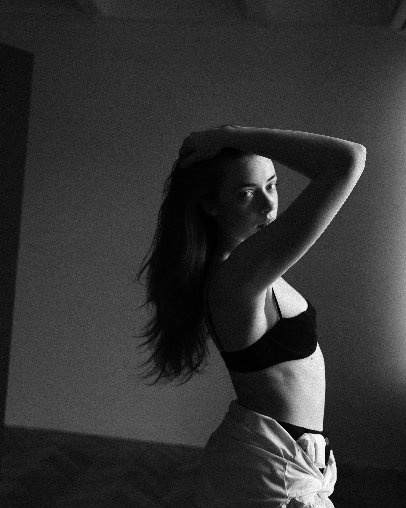
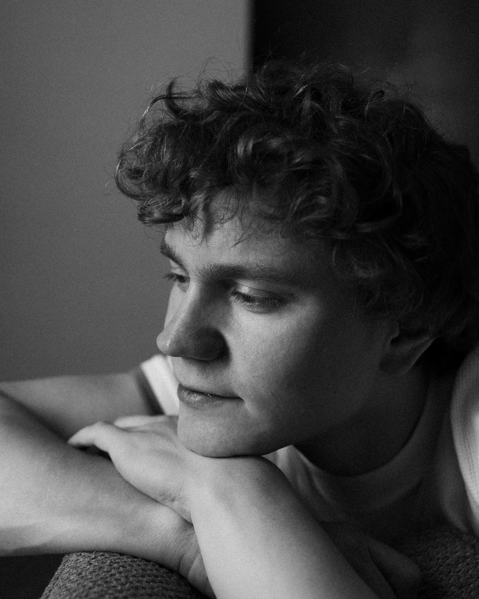
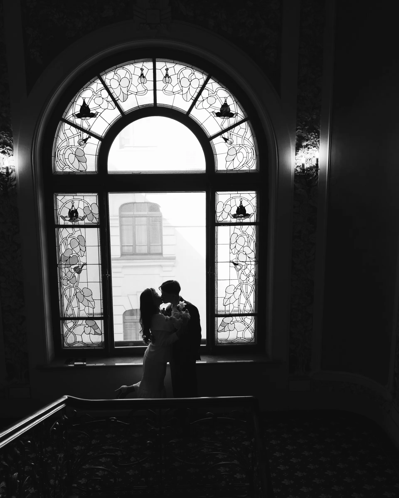

фотограф, москва
nastya nico
женский портрет
снимаю, как я вижу тебя. и этот мир в целом)
смотреть кадры
мужской портрет
учусь видеть мир не только чёрно-белым. что не скажешь о моих работах)
смотреть кадры
пара
такие дни проходят слишком быстро и ещё долго догоняют тебя
смотреть кадры
роспись и свадьба
сниму как вы обменялись кольцами и стали новой семьёй
смотреть кадрыпривет, друзья
я настя nico с фотографией мы были порознь два с половиной года. в декабре 2025 я снова взяла в руки фотоаппарат и точно больше не хочу быть врозь. а летом сняла свадьбу и бесповоротно влюбилась в фотографию. для себя снимаю то, что случается само: дождь в гуанчжоу, латте на овсяном из серфа.